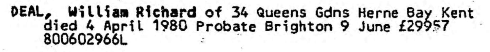
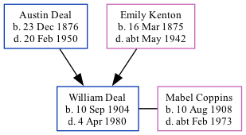

William Richard Deal 1904 - 1980
[ Home ] | [ Calendar ] | [ Surnames Index ] | [ Family History ]A chauffeur-handyman and the 2nd of 3 children of Austin Deal (a cemetery caretaker) and Emily Kenton, William Deal, the second cousin once-removed on the father's side of Nigel Horne, was born in Chartham, Kent, England on Sep 10, 19041,2,3 and baptized there at St Mary's Church, Church Lane on Nov 27, 1904. He married Mabel Coppins (a secretary housekeeper) there at St Mary's Church, Church Lane, on Jul 3, 19285.
Throughout his life, William lived in several places: at Kent County Lunatic Asylum in Chartham on Apr 2, 19116; at Railway Tavern in Chartham in Dec 1915; on Harwood Hall, Harwood Hall Lane, Upminster, Essex, England on Sep 29, 19391; and at 34 Queens Gardens, Herne Bay, Kent, England in 1980.
He died on Apr 4, 1980 in Canterbury, Kent3,4.
Parents
- Austin Alfred was born on Dec 23, 1876
- Emily Ellen was born on Mar 16, 1875
Citations
- 1939 Register - Findmypast (was recorded at this address)
- England & Wales births 1837-2006 - Findmypast
- England & Wales deaths 1837-2007 - Findmypast
- England & Wales Government Probate Death Index 1858-2019 - Findmypast
- England Marriages 1538-1973 - Findmypast
- 1911 Census for England & Wales - Findmypast (was age 6 and the son of the head of the household)
Media
1911 UK Census - page 1

1911 UK Census page 2

William Richard Deal - probate

England & Wales births 1837-2006 - BMD/B/1904/4/AZ/000153/004
England & Wales deaths 1837-2007 - BMD/D/1980/2/AZ/000267/133
England Marriages 1538-1973 - R_848404251
Kent, Canterbury Archdeaconry marriages 1538-1928 - GBPRS/CANT/M/97057865/1
Kent, Canterbury Archdeaconry banns 1754-1928 - GBPRS/CANT/M/94079114/1
1911 Census for England & Wales - GBC/1911/RG14/04308/0064/10
1939 Register - TNA/R39/1529/1529D/004/28
1939 Register Transcription - TNA-R39-1529-1529D-004-29
England, Births & Baptisms 1538-1975 Transcription - R_885426922
England & Wales marriages 1837-2005 - BMD/M/1928/3/AZ/000342/148
England Births & Baptisms 1538-1975 - R_885428177
Kent Baptisms - GBPRS/CANT/B/96195396
Kent Baptisms - GBPRS/CANT/B/96782497
England & Wales Government Probate Death Index 1858-2019 - GBOR/GOVPROBATE/C/1980-1980/00060659
Family Tree
Generated by Ged2Site. Last updated on Jul 20, 2025